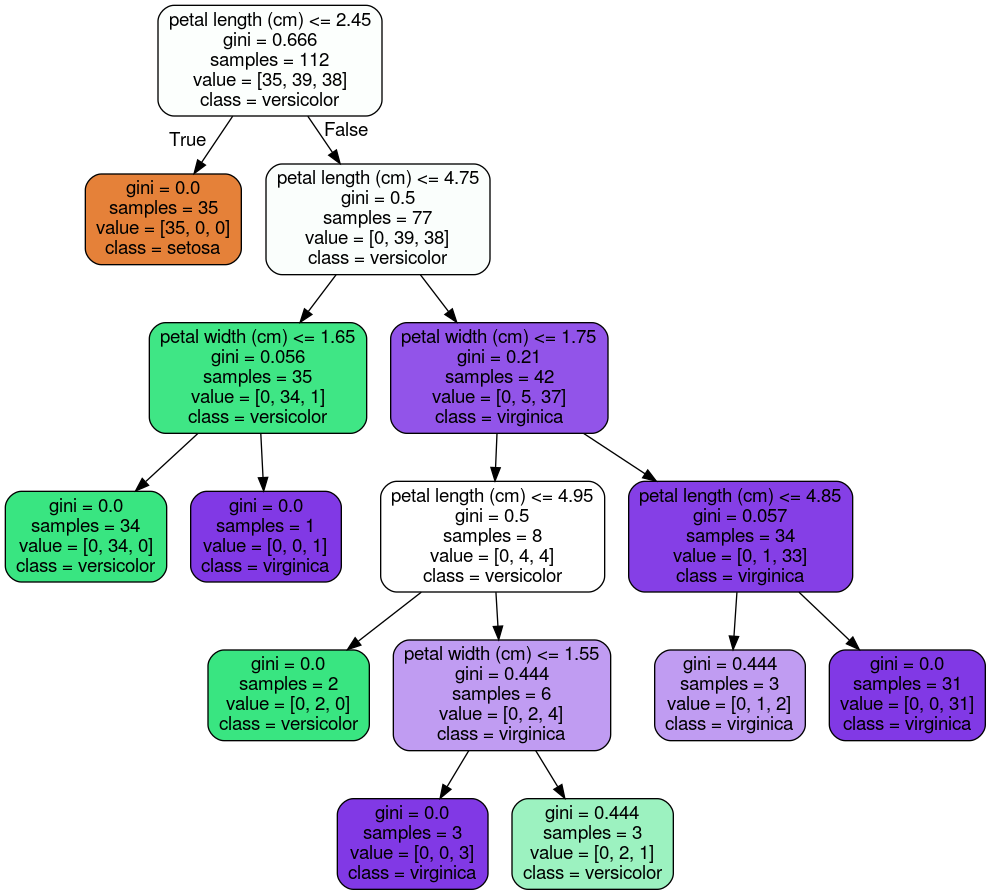
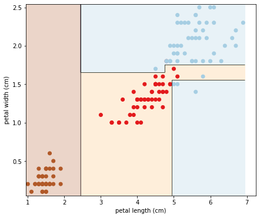

โดย ชิตพงษ์ กิตตินราดร | มกราคม 2563
Decision tree เป็น Algorithm ที่เป็นที่นิยม ใช้ง่าย เข้าใจง่าย ได้ผลดี และเป็นฐานของ Random Forest ซึ่งเป็นหนึ่งใน Algorithm ที่ดีที่สุดในปัจจุบัน
หลักการพยากรณ์ด้วย Decision tree นั้นเข้าใจง่ายมาก ให้นึกว่า Decision tree คือต้นไม้กลับหัว โดยบนสุดคือราก และส่วนล่างลงมาที่ไม่สามารถแตกไปไหนได้แล้วก็คือใบ เราจะเริ่มด้วยการพิจารณาเริ่มแรกบนจุดเริ่มต้นที่เรียกว่า Root node ถ้าข้อมูลที่พบเป็นไปตามเงื่อนไขนั้น การตัดสินใจก็จะวิ่งไปทางซ้ายของ Root node ไปที่จุดที่เรียกว่า Child node ซึ่งถ้าข้อมูลที่มาตามเส้นทางนี้ตรงตามเงื่อนไขของ Child node นี้ ก็จะถือว่าสิ้นสุด เราเรียกว่า Node สิ้นสุดว่า Leaf node
ย้อนกลับไปยัง Root node ถ้าข้อมูลที่พิจารณาไม่เป็นไปตามเงื่อนไข การตัดสินใจจะวิ่งไปอีกทาง คือทางขวา ไปพบ Child node อีกอันซึ่งก็จะตั้งเงื่อนไขคำถามต่อไป การตัดสินใจก็จะวิ่งไปทางที่ตรงตามเงื่อนไข ทำอย่างนี้ไปเรื่อยๆ จนได้คำตอบ
สำหรับกลไกการเทรนโมเดลเพื่อสร้าง Decision tree จะอธิบายด้านล่าง เมื่อได้อธิบายเรื่องค่า Gini
ก่อนจะไปไกลกว่านั้น จะชี้ให้เห็นว่า Decision tree นั้นไม่ต้องใช้ข้อมูลที่ทำ Feature scaling เพราะไม่ได้มี Optimisation algorithm แบบทั่วไป จึงใช้งานสะดวกมาก
เพื่อความเข้าใจมากขึ้น ลองมา Program ด้วย scikit-learn กันเลย โดยใช้ชุดข้อมูล Iris เหมือนเดิม เพื่อความเรียบง่ายจะเลือก Feature เฉพาะ Petal length และ Petal width:
import numpy as np
import matplotlib.pyplot as plt
from sklearn import datasets
from sklearn.model_selection import train_test_split
from sklearn.tree import DecisionTreeClassifier
from sklearn.tree import export_graphviz
# Load the iris data
iris = datasets.load_iris()
X = iris.data[:, 2:]
y = iris.target
# Split the data into train and test set
X_train, X_test, y_train, y_test = train_test_split(X, y, random_state=42)
แล้วก็ลองเทรนโมเดลกันเลย:
# Train and fit the model
tree_clf = DecisionTreeClassifier(max_depth=5).fit(X_train, y_train)
# Evaluate the model's accuracy
print("Train set accuracy = " + str(tree_clf.score(X_train, y_train)))
print("Test set accuracy = " + str(tree_clf.score(X_test, y_test)))
สังเกตว่ามี Argument max-depth นั่นคือตัวควบคุมว่าจะให้ต้นไม้ของเรามีความลึกกี่ขั้น ถ้าเราพบว่าโมเดลของเรา Overfit ก็ควรลองลดจำนวนชั้นของความลึกลง ดังนั้น max-depth จึงเป็น Regularisation hyperparameter ของ Decision trees
สำหรับความคลาดเคลื่อน พบว่าได้ความแม่นยำจาก Method .score ดังนี้:
Train set accuracy = 0.9821428571428571
Test set accuracy = 1.0
คือแม่นยำ 100% ทีเดียว
จากนั้นเรามาลองสร้างกราฟการตัดสินใจ โดยใช้ฟังก์ชัน export_graphviz ในโมดูล sklearn.tree เพื่อ Export กราฟออกมาด้วย Graphviz ซึ่งเป็น Open-source graph visualisation software:
# Export graph
export_graphviz(tree_clf, out_file="iris_tree.dot",
feature_names=iris.feature_names[2:],
class_names=iris.target_names,
rounded=True, filled=True)
ฟังก์ชันนี้จะ Export กราฟออกมาเป็นไฟล์นามสกุล .dot ซึ่งเราต้องใช้คำสั่ง dot จาก Graphviz package เพื่อแปลงไฟล์เป็น .png โดยเรียกคำสั่งจาก Command line:
$ dot -Tpng iris_tree.dot -o iris_tree.png
กราฟที่ได้ออกมาเป็นดังนี้:

ถ้าอ่านตามแผนภาพก็น่าจะพอเข้าใจคำอธิบายข้างต้นว่า Decision tree พยากรณ์อย่างไร อย่างไรก็ตาม ในแต่ละ Node มีรายละเอียดที่ควรรู้เพื่อเพิ่มความเข้าใจดังนี้:
samples คือจำนวนรายการข้อมูลที่เข้ากันได้กับ Node นั้น ดังนั้น เมื่อการตัดสินใจเคลื่อนลงไปตามความลึกของต้นไม้ จำนวน samples ของ Node ในแต่ละชั้นจะมีแนวโน้มที่จะลดลงเรื่อยๆgini บ่งชี้ความ "บริสุทธิ์" ของ Node โดย gini = 0 หมายความว่าข้อมูลทุกรายการใน Node นั้นอยู่ใน Class เดียวกัน ส่วน gini = 0.5 ก็แปลว่ารายการข้อมูลใน Node นั้นอยู่ใน 2 Class เท่าๆ กัน โดยแสดงผ่าน value เช่น value = [0, 39, 38] ใน Child node ด้านขวาของ Root node แปลว่า จากข้อมูล 77 รายการที่เข้าเงื่อนไข Node นี้ มี 39 รายการที่อยู่ใน Class versicolor และ 38 รายการอยู่ใน Class virginica โดยถ้าหยุดพิจารณาที่ขั้นนี้ ก็จะถือว่าข้อมูลที่เข้าเงื่อนไขของ Node นี้อยู่ใน Class versicolor เป็นต้นเพื่อให้เป็นประโยชน์ในการทำความเข้าใจ Algorithm ในส่วนถัดไป เราสามารถบอกได้ว่าค่า gini คำนวนตามสูตรนี้:
โดย คือสัดส่วนว่าจากจำนวนรายการข้อมูลใน Node ที่ นั้นอยู่ใน Class กี่รายการ
มาถึงจุดนี้เราก็พร้อมที่จะมาทำความเข้าใจว่า Decision tree algorithm นั้นสร้างโมเดลได้อย่างไร โดย scikit-learn จะใช้ Algorithm ที่ชื่อ Classification And Regression Tree (CART) ซึ่งทำงานตามลำดับดังนี้:
1) แบ่ง Train set ออกเป็น 2 ส่วนโดยเลือก Class และเงื่อนไข เช่น petal length <= 2.45 โดยค้นหาคู่ของ และ ที่จะได้ Node ที่ "บริสุทธิ์" ที่สุด นั่นคือมีค่า Gini ต่ำที่สุดนั่นเอง เราสามารถแสดง Cost function ที่สอดคล้องกับเงื่อนไขนี้ได้ดังนี้:
gini ของข้อมูลชุดซ้ายและขวาที่ถูกแบ่ง2) แยกข้อมูลแต่ละชุดย่อยออกเป็นสองชุดและทำซ้ำข้อ 1) เรื่อยๆ จนกระทั่งถึงความลึก max-depth ที่กำหนด หรือจนกระทั่งไม่พบค่า และ ที่จะลดความไม่บริสุทธิ์ได้อีกต่อไป
ตอนนี้เราก็เข้าใจแล้วว่า Decision tree สร้างโมเดลอย่างไร สุดท้ายเรามาลองพล็อตเส้นแบ่งการตัดสินใจจากตัวอย่างของเรา:
# Plot the decision boundaries
def plot_decision_boundary(clf, X, y, cmap='Paired_r'):
h = 0.005 # Boundary lines' resolution
x_min, x_max = X[:,0].min() - 10*h, X[:,0].max() + 10*h
y_min, y_max = X[:,1].min() - 10*h, X[:,1].max() + 10*h
xx, yy = np.meshgrid(np.arange(x_min, x_max, h),
np.arange(y_min, y_max, h))
Z = clf.predict(np.c_[xx.ravel(), yy.ravel()])
Z = Z.reshape(xx.shape)
plt.figure(figsize=(7,6))
plt.contourf(xx, yy, Z, cmap=cmap, alpha=0.25) # Background
plt.contour(xx, yy, Z, colors='k', linewidths=0.2) # Boundary lines
plt.scatter(X[:,0], X[:,1], c=y, cmap=cmap); # Data points
plt.xlabel(iris.feature_names[2])
plt.ylabel(iris.feature_names[3])
plot_decision_boundary(tree_clf, X, y)
ได้ผลคือ:

จะเห็นว่า Decision tree สร้างเส้นแบ่งการตัดสินใจที่เป็นเส้น Orthogonal คือแนวระนาบและแนวดิ่งที่ตั้งฉากกันเท่านั้น ดังนั้นในบางกรณีจะเป็นไปไม่ได้เลยที่ Decision tree จะทำนาย Test set ได้แม่นยำ 100%
ข้อสังเกตนี้สอดคล้องกับธรรมชาติของ CART algorithm ที่ค้นหา Parameter ที่ดีที่สุดจากบนลงล่างโดยตัดสินใจจากเงื่อนไขที่พบในลำดับชั้นปัจจุบันเท่านั้น โดยไม่ได้เช็คว่าการตัดสินใจในชั้นนั้นจะส่งผลให้ลำดับชั้นล่างๆ ลงมามีค่าความไม่บริสุทธิ์น้อยที่สุดหรือไม่ เราเรียกพฤติกรรมแบบนี้ว่า Greedy algorithm ซึ่งพฤติกรรมแบบนี้ทำให้ต้องใช้เวลานานจนแทบเป็นอนันต์จึงจะหาต้นไม้ที่ดีที่สุดได้ โดยใช้เวลาถึง ในทางคณิตศาสตร์เรียกปัญหานี้ว่า ปัญหา NP-Complete ดังนั้นเมื่อเราใช้ Decision tree เราจึงต้องยอมรับผลลัพธ์ที่อาจจะไม่สมบูรณ์แบบ แต่ส่วนมากก็ดีพอสำหรับงานส่วนมาก
บทต่อไปเราจะเรียนรู้ Random Forest ซึ่งคือการนำต้นไม้หลายๆ ต้นมารวมกันเป็นป่า เพื่อเพิ่มความแม่นยำในการ Generalise โมเดลให้ทำงานได้ดีขึ้นกับข้อมูลที่โมเดลไม่เคยเห็น
หน้าแรก | บทที่ 8 Support Vector Machines | บทที่ 10 Random Forest